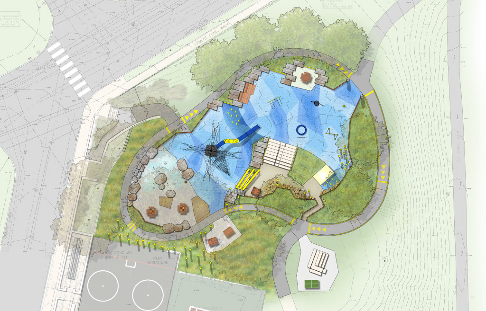
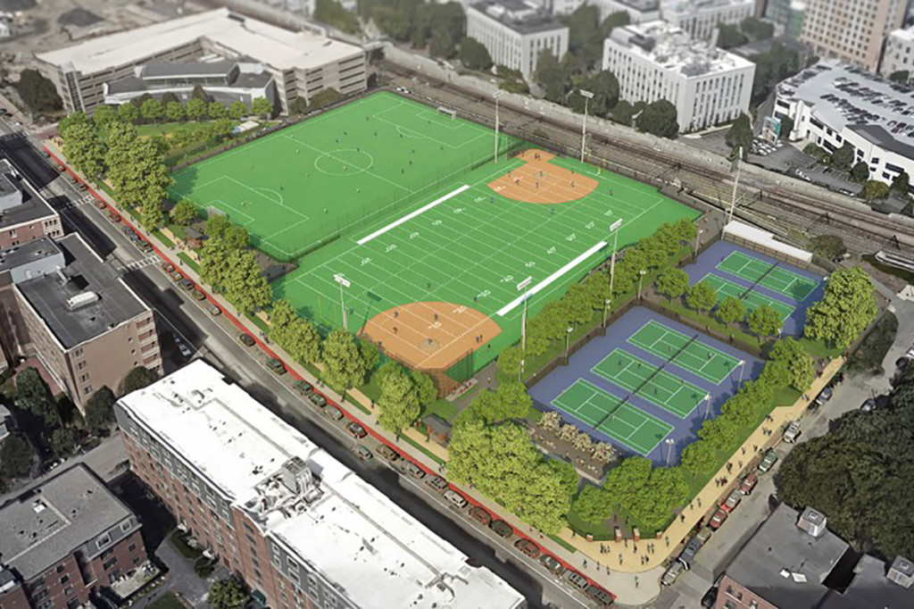
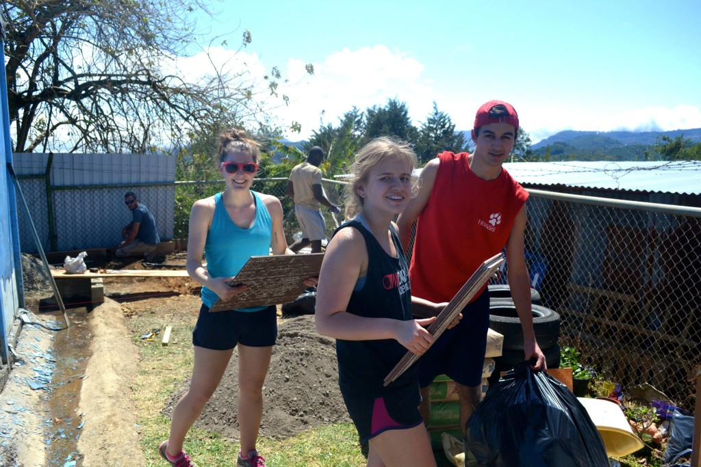
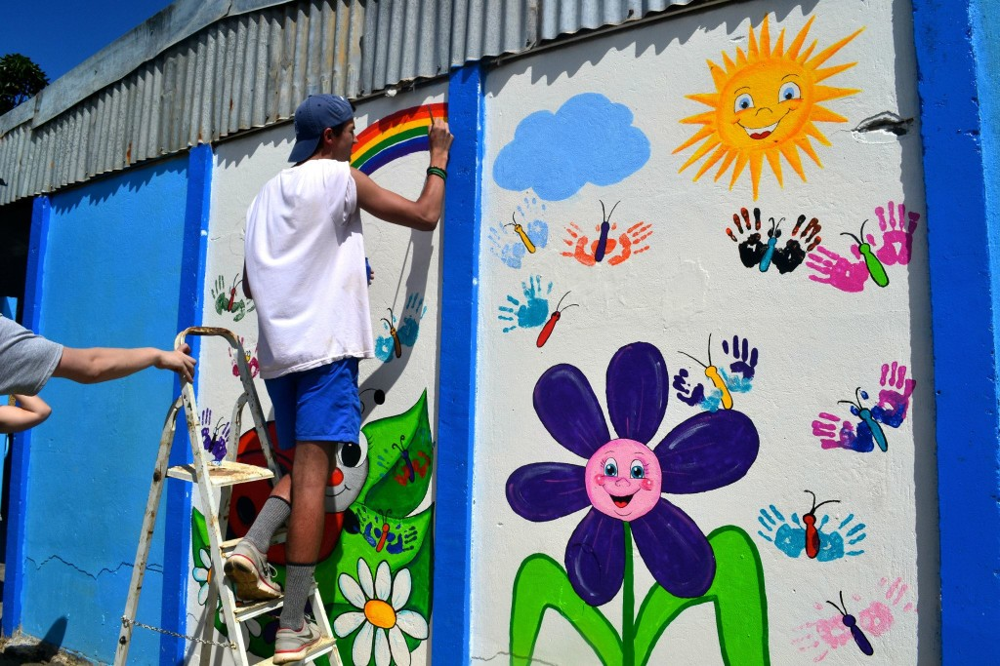

We advocate for inclusive playground design in Boston to meet the needs of children with disabilities. We accomplish this through collaboration with the Boston Parks and Recreation Department, research into inclusive play equipment, and scoring playgrounds throughout Boston. We have built a scorecard that measures the quality, safety, and inclusivity of play spaces. These results help us to identify the needs of different communities. We share our findings at conferences and get others involved in evaluating the quality of play in their hometowns.
So far our group has worked on two finalized designs which will begin construction this year. The first is Fallon field, located in Roslindale. Our team attended several community meetings which were held as part of the design process for the playground. In these meetings, we functioned as a third party to the city/ design team and the community, and provided a unique voice of compromise from a research perspective. The final design for the Fallon field playground features a 35 foot slide, a towering net structure, an obstacle course section for smaller children, and a large splash pad area.
 The second project our team was involved with was the $26 million project aimed at completely renovating and redesigning the Carter playground and field. In partnership with the City of Boston, the university is rebuilding the playground from the ground up as part of its construction of the new Interdisciplinary Science & Engineering Complex (ISEC). In addition to attending community meetings for the Carter renovation, our team talked with the lead designer on the project, Kevin Beuttell. He was very receptive to our suggestions and advice, and the final design involves many inclusive elements including water features and a wheelchair accessible ramp.
In the spring of March 2015, four of our members set off to San Marcos, Costa Rica to work with R.A.W. Tours and help design and construct a playground at a local preschool. Two of our members served as lead designers. The final result is an eco-friendly, colorful, interactive, and diverse playground to replace the overgrown and hazardous space in which the preschoolers used to play. Bright paint helped breathe life into the metal fence and plastic bottles, and the tires helped create levels and terracing. A mosaic of shattered tiles weaves a path through the concrete from the grassy area to the stage. The project was very inexpensive, and completed within a typical 40-hour work week. Our members love working on Boston playgrounds, but feel so fortunate to have had the opportunity to bring their passion for playgrounds abroad.
 We wanted to see how Boston compares to other major cities throughout the country, and what factors are drivers of the quality of play. We ran a survey of the most inclusive playgrounds in 14 major cities, measuring each playground’s features, maintenance and safety, inclusivity, and overall quality. Using the information that we gathered from other cities, we provided recommendations for Boston to improve its quality of play.
The following report is a formal response from a Northeastern student research organization to the Carter Playground Design Survey and community meetings. The goal is to explain and defend the importance of inclusive play elements in the design of the new Carter Playground. Wevinvestigated and addressed each portion of the design survey, highlighting elements most beneficial to collaborative growth between children of all abilities.
This report was made in preparation for our meeting with the Copley Wolff Design Group and Cathy Baker-Eclipse of Boston Parks and Recreation, aiming to provide our opinion on the inclusivity of the current design. We broke it down into aspects of the designs that we liked, those that are small improvements that we felt could be easily made, as well as larger changes that might be more extreme or cost intensive.